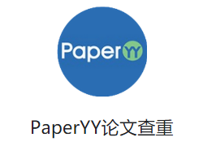
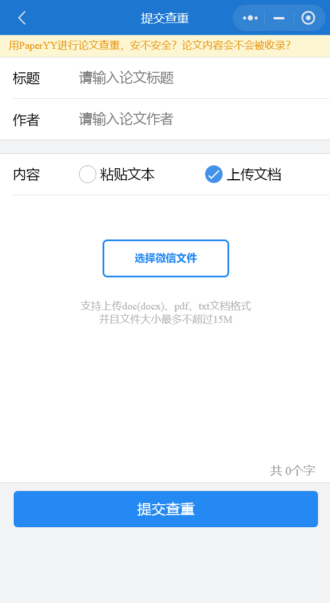
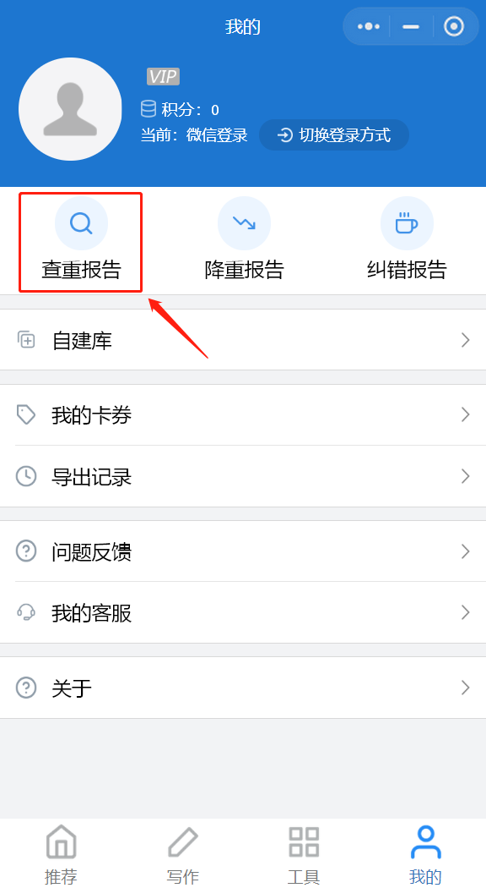
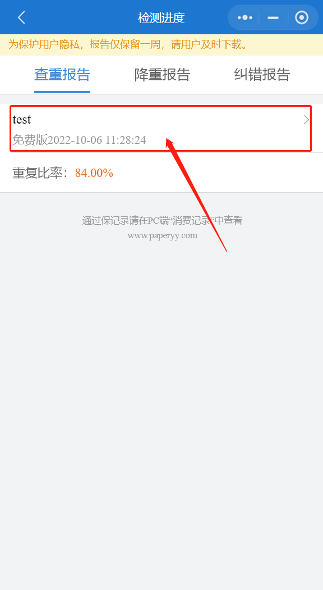
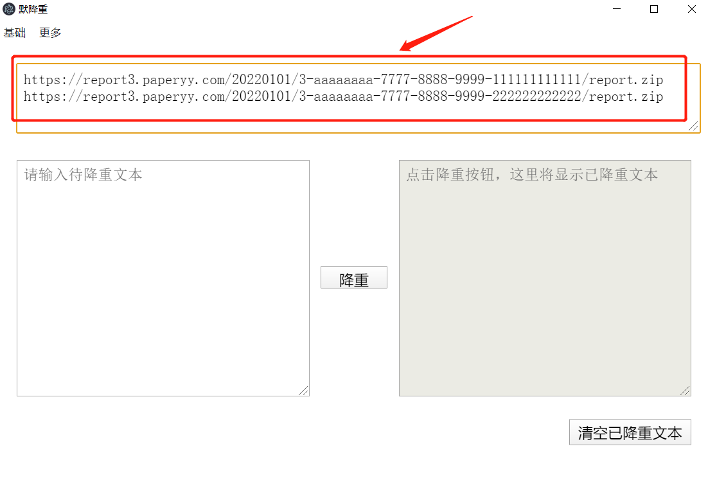
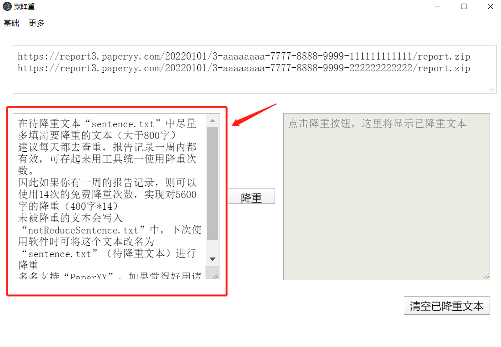
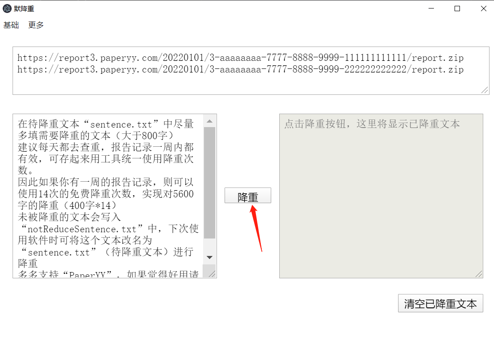

一、如何获取报告记录？
1. 微信小程序搜索“PaperYY论文查重”。
2. 使用免费次数进行查重（注意是“查重”，每天都能免费查重一次）
3.这里点击“提交查重”后界面可能没有响应，其实已经在查重了，直接返回主页就行
4. 点击“我的”--“查重报告”
5. 复制报告记录url
二、如何降重
1. 将报告记录粘贴到“主页”中最上方的“报告记录栏目”。注意：一行一个报告记录，可以粘贴多个报告记录。
2. 将待降重文本粘贴到“主页”中左侧的“待降重文本栏目”
3. 点击“降重”按钮，等待一会儿，右侧的“已降重文本栏目”将会显示已降重的文本
三、其他
1. 一个报告记录可对800字降重
2. 可用多个报告的降重次数对同一文本进行降重，从而实现一次几千字的降重。
3. 建议每天都去查重，报告记录一周内都有效，可存起来用工具统一使用降重次数。 因此如果你有一周的报告记录，则可以使用14次的免费降重次数，实现对5600字的降重（400字*14）
4. 为了避免浪费次数，“已降重文本栏目”会显示历史降重记录，如果不需要可点击“清空已降重文本”，则清空内容